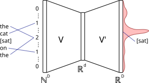

Word2Vec embeddings
In the previous demonstrations, we explored N-gram language models such as bigrams and trigrams. These models predict the next word in a sentence by looking at a small number of previous words and estimating probabilities from counts in a large corpus of text. Despite their simplicity, they can already produce surprisingly coherent predictive text.
Problems with N-grams
N-gram models have several important limitations:
- they treat words as independent symbols. For example, the model treats the words "king", "queen", and "monarch" as completely unrelated tokens. Ideally, we would like a language model to recognise when different words play similar roles in a sentence and generate similar text accordingly.
- they can only learn from exact word sequences that they have already seen. Language is extremely rich and creative, and even very large datasets contain only a tiny fraction of all possible sentences. As a result, many perfectly reasonable phrases may appear rarely -- or not at all -- in the training data.
- for large context sizes, N-gram models may generate fragments of training text verbatim. To reduce this effect, the context size is usually kept small (e.g., 3 words), which restricts the long-term coherence of the text it generates.
These limitations motivated the development of neural language models. Where N-grams effectively ask, “Have I seen this exact sentence before?”, modern neural models ask, “Does this sentence resemble patterns I have learned?”. The key idea that makes this possible is continuous word embeddings. Instead of treating words as isolated symbols, neural models represent them as vectors in a continuous space, where distances and directions capture semantic relationships between words. In this demonstration, we explore how such representations are learned using the instrumental Continuous Bag-of-Words (CBOW) Word2vec model.
Words as vectors
Neural networks operate on numerical data. How, then, can we use them to process language? The key idea is to represent each word as a vector of numbers. One simple approach is known as a one-hot encoding.
Suppose our vocabulary contains $D$ unique words, taken from a training corpus. In a one-hot representation, each word is assigned a vector of length $D$ containing zeros everywhere except for a single entry equal to one. For example, if our vocabulary is simply: ["king", "queen", "fox", "dog"], then the corresponding one-hot vectors might look like $$ \text{king} \to [1, 0, 0, 0],\quad \text{queen} \to [0, 1, 0, 0],\quad \text{fox} \to [0, 0, 1, 0],\quad \text{dog} \to [0, 0, 0, 1]. $$
This encoding allows neural networks to process words numerically, but it has a key limitation: it treats every word as completely unrelated to every other word. In geometric terms, all one-hot vectors are equally distant from each other. As a result, the model cannot recognise that some words (such as king and queen, or fox and dog) are more closely related in meaning than others.
Ideally, we would like a representation in which similar words are assigned similar vectors. In other words, we would like words with related meanings to lie close together in a geometric space. Word2vec learns exactly this type of representation, known as a word embedding. See this video for a fantastic overview of word embeddings.
Word2vec CBOW (2013)
The central idea of Word2vec is to use the surrounding words in a sentence to predict a missing word. For example, consider the sentence "the cat ___ on the". From the context words "the", "cat", and "on", a human reader might reasonably guess the missing word "sat" or "lay", even if the words were given to them jumbled up in a bag -- a bag of words (BOW).
The CBOW Word2vec model learns to solve this same prediction task with a very simple neural network, illustrated below.

The idea is to take the surrounding context words and combine their one-hot vectors, typically by summing or averaging them. Because this operation ignores the order of the words, the model effectively receives a bag of context words as input. The resulting vector is then passed through a neural network that outputs a probability distribution over the entire vocabulary.
The network itself is extremely simple and consists of three steps:- Multiply the input vector in $\mathbb{N}^D$ (or $\mathbb{R}^D$ if averaging is used) by the encoder matrix $V\in\mathbb{R}^{d\times D}$,
- Multiply the resulting embedded vector in $\mathbb{R}^d$ by the decoder matrix $V'\in\mathbb{R}^{D\times d}$,
- Apply a softmax to the decoded vector in $\mathbb{R}^D$ to produce a valid probability distribution over the vocabulary.
The trainable parameters (or weights) in the model are simply the elements of $V$ and $V'$ (note: this task can be simplified even further by assuming $V'=V^T$). These weights are learned via backpropagation, using the cross-entropy loss over the training set.
At first glance, the task of filling in missing words may not seem especially remarkable. Arguably, the more useful part of training is really a by-product: learning semantic meaning within the embedding space. The embedding dimension $d$ is much smaller than the vocabulary size $D$ (e.g. 50–300 vs. tens of thousands), forcing the model to compress information efficiently. As a result, during training, words that appear in similar contexts are mapped to nearby vectors, and the embedding space begins to reflect semantic structure.
These continuous (the 'C' in CBOW) embeddings replace one-hot encodings in downstream tasks, such as generative text models, enabling models to generalise and capture meaning. The remainder of this demonstration illustrates just how powerful these embeddings can be.
Training Word2vec CBOW
A CBOW Word2vec model used in this demonstration is trained on a recent (as of 11/03/26) Wikipedia data dump, containing 344 MB of text. A typical extract is shown below:
Art
Art is a creative activity. It produces a product, an object. Art is a diverse range of human activities in creating visual, performing subjects, and expressing the author's thoughts. The product of art is called a work of art, for others to experience. Some art is useful in a practical sense, such as a sculptured clay bowl that can be used. That kind of art is sometimes called a "craft". Those who make art are called artists. They hope to affect the emotions of people who experience it. Some people find art relaxing, exciting or informative. Some say people are driven to make art due to ...
The resulting vocabulary contains $D = 145,326$ unique tokens. An embedding dimension of $d = 100$ is used. For each training example, a context radius $c \in \{1,2,3,4,5\}$ is sampled at random, and the model uses the $c$ words on either side of the target word to predict it. The matrices $V$ and $V'$ are learned using the Node.js interface to Google's original tool.
Embedding plot
It is difficult to plot the true embedding vectors, since they lie in a 100-dimensional space. Below, we apply a dimensionality reduction technique called principal component analysis for visual exploration. The first five principal components are retained, and the plot shows a two-dimensional projection of this reduced space. Nearby points represent words used in similar contexts. Notice that words that appear close together in some dimensions may differ in other dimensions.
Cosine similarity
Compare two words directly by measuring how similar their embedding vectors are. Cosine similarity measures the angle between vectors in the embedding space. Scores closer to 1.0 indicate that the vectors point in nearly the same direction, meaning the words tend to appear in very similar contexts. Scores near 0 indicate little relationship, while negative values suggest the words are used in very different contexts.
Nearest neighbours
Search for the words that sit closest to a query term in the embedding space. Closeness is measured using cosine similarity between word vectors. Words that appear near each other in this space tend to occur in similar contexts in the training data. This is often the quickest way to see what kinds of contexts the model associates with a particular word.
Results
Vector algebra
Build an analogy by subtracting one concept and adding another in the
embedding space. Word vectors often capture relationships between words
as directions. For example,
(woman - man) + king
moves the vector for king in the same direction that takes
man to woman. The nearest word to the resulting vector
is often queen.
Similarly, the expression
(dogs - dog) + cat
attempts to apply the same "plurality" transformation to the word
cat. If the embedding space captures this relationship well,
the result will lie close to cats.
Results
Limitations of Word2vec and the need for attention
While Word2Vec marked a major breakthrough in representing words as continuous vectors, it also has important limitations. First, each word is assigned a single fixed vector, or static embedding, regardless of context. This means that words with multiple meanings are forced into a single representation. Using the nearest neighbours feature, try querying "table" with 20 neighbours. The word "table" may refer to a dinner table, a league table, or even the periodic table (see "Mendeleevs"). In reality, the meaning of a word depends strongly on its surrounding context — something Word2vec cannot capture directly.
Second, the CBOW model treats context as a bag of words, ignoring word order entirely. As a result, sentences like “dog bites man” and “man bites dog” are indistinguishable to the model, despite having very different meanings. Third, Word2Vec relies on a small context window. While this captures local relationships, it cannot model long-range dependencies, such as grammatical agreement or relationships between distant words in a sentence.
The main issue is that Word2Vec compresses meaning into individual word vectors, rather than modelling how words interact within a sentence. Ideally, we would like representations that adapt dynamically to context and capture relationships across an entire sequence.
This motivated the development of attention-based models. Instead of assigning fixed meanings to words, attention allows a model to determine which other words in a sequence are most relevant when interpreting a given word. This leads to context-dependent representations and enables flexible modelling of long-range dependencies. Modern architectures such as transformers build entirely on this idea, replacing fixed embeddings with representations that evolve as information flows through the network.